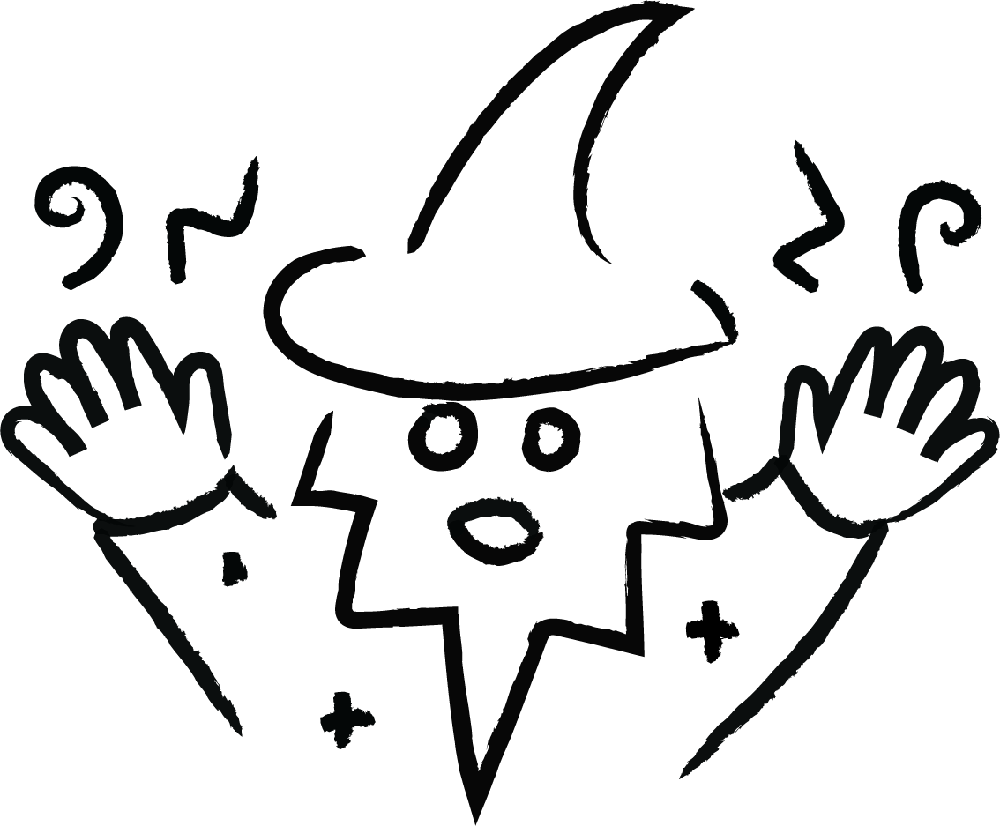
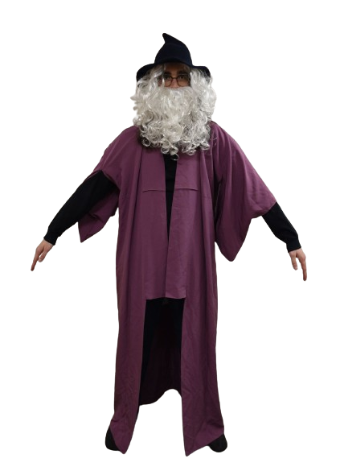
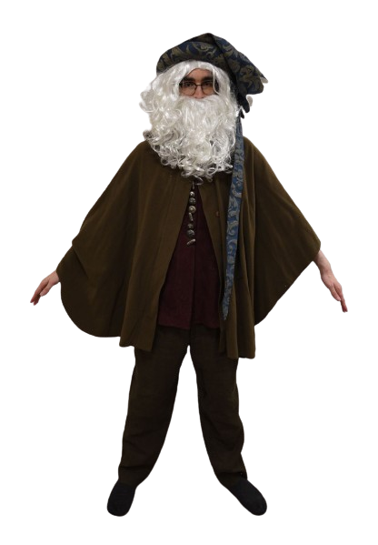
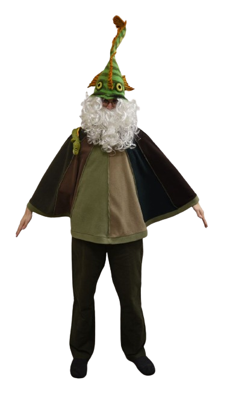
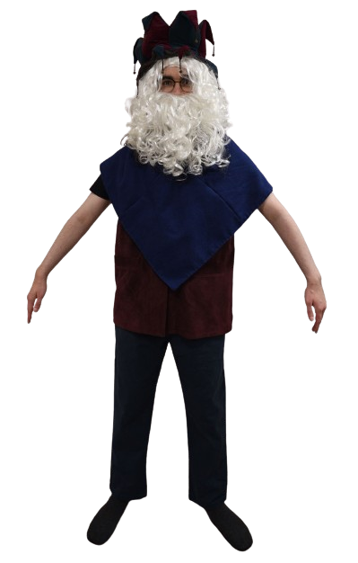
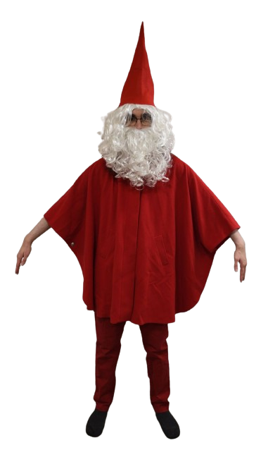
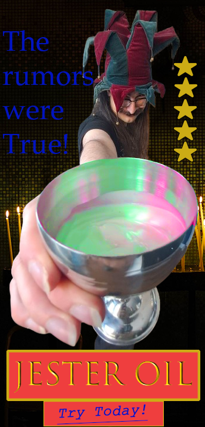
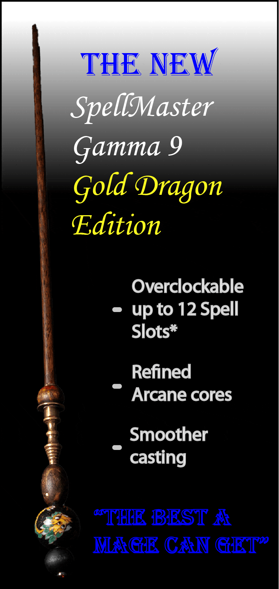
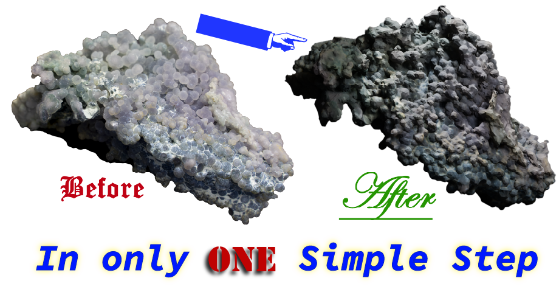

observe!
> though renowned for trinkets, the merchant is no stranger to the finest in wizardly attire

> though renowned for trinkets, the merchant is no stranger to the finest in wizardly attire


The robes. The poise. The pointed hat. Each iconic element makes up the truly classic look of the archetypical western wizard. Timeless as chronomancy itself. Why second guess success?

In the modern landscape it is becoming more and more difficult to find wizardly garments straddling the subtle balance between opulence and class. Mages of fine taste, look no further. Magi Collective's latest collection is for the kind of wizard who takes pride in their gilded spell tome and covets only the highest quality wands. Don't compromise. You deserve to look enchanting.

Aquamancers are oft unfairly overlooked in the wider world of spellcraft. But what could hold more mystique than the ancient, enigmatic depths of the ocean? “Is it a hat?” “Did a fish bite them?” These are just some of the questions a passer by might ask, agog in the wake of your stride. In a world of shallow aesthetics, allude to your true depths with the latest in sub-aqueous advant-chiq.

What is 'Jesters Privilege'? The answer is their unique ability to tell unsavoury truths even to a king, if wrapped in humour skillfully enough. In that same way, wear the truth. Is not everything a performance? Maybe so, but if you wear this collection with enough panache, any naysayer will have no choice but to laugh with you, not at you.

Red. The colour of danger to some and good luck to others. If you're ready to embody the lifestyle of a daring free spirit, The Scarlet Gnome is for you. Through the bold yet playful marriage between traditional gnomish attire and modern arcane fashion design, this look is sure to steal the spotlight.


